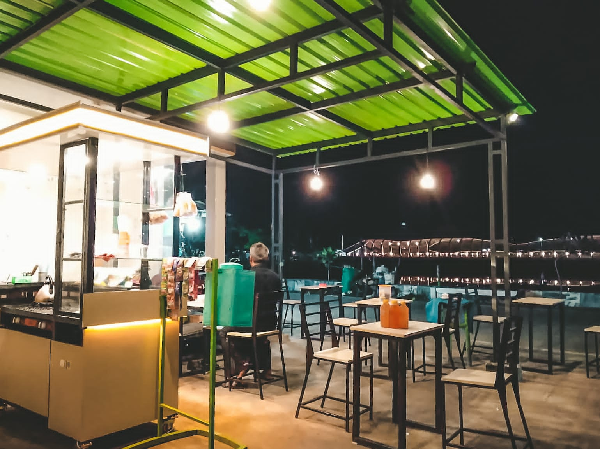

Tentang Kami
Warung Mak Ija juga memiliki penikmat tersendiri, biasanya para penikmat ini berusia kisaran 20-50 tahun, yang biasanya memilih tempat warung kopi untuk untuk hanya sekedar berbincang-bincang ringan antara teman dan sahabat atau bahkan digunakan untuk melakukan pertemuan bagi sekelompok orang-orang yang mendiskusikan sesuatu yang bersifat ringan, tempat ini sangat cocok untuk itu, selain tempat ini tidak terlalu formal dan mengikat, harga dari jasa warung kopi pas dikantong. Gaya hidup masyarakat yang menjadikan nongkrong sebagai salah satu lifestyle.